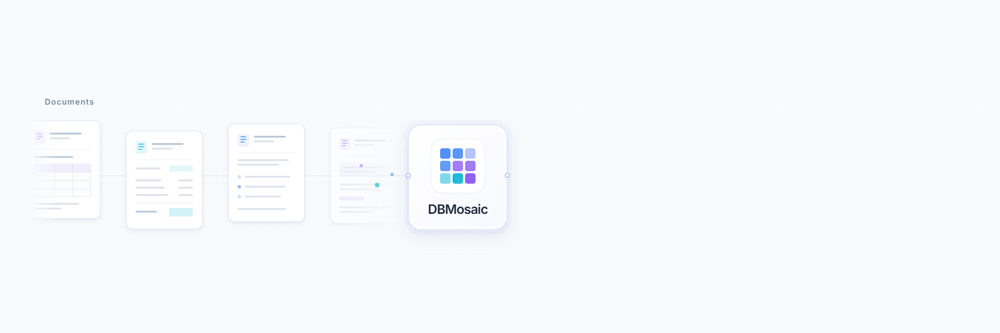

01
按模式抽取
模式里写着完整性约束和业务约束。抽取出的记录要能放进这套结构，而不是先生成、再指望它对得上。
DOCUMENTS IN. DATABASE OUT.
从非结构化文档到关系数据库。DBMosaic 将抽取、校验与修复连接成闭环，让每一条记录有据可循，让每一段关系经得起检验。

FILM / PRODUCT
01 / CAPABILITIES
输入是文档，加上一份带约束的 ER 模式。输出不是一段被塞进表里的文本，而是一份结构成立的数据库。
01
模式里写着完整性约束和业务约束。抽取出的记录要能放进这套结构，而不是先生成、再指望它对得上。
02
抽取、校验、修复循环执行。外键断裂这类违规被标出来之后，只对出错的部分重新抽取。
03
文档里本来就含糊的地方，和可以改回来的抽取错误，是两件事。不是每一处不一致都该被强行修平。
04
第三方抽取器、领域校验器和自定义修复算子，通过 MCP（Multi-Constraint-Plugin）注册表接进来。
05
在界面里上传文档，用表单或自然语言定义模式，看着智能体循环跑完，再检查并导出得到的数据库。
02 / HOW IT WORKS
编排器按信号推动整条链路。校验报出的违规进入修复，修复后再回到记忆里的快照，直到得到最终的数据库实例。
文档进入数据库离开
以目标模式为指引，从文档中识别实体、属性与关系。
MCP 插件逐项检查结构、取值、引用和时间等约束。
针对违规做定向再抽取，而不是把整批文档重跑一遍。
信号驱动闭环，写入快照，交出最终数据库实例。
支持通过 Web 界面完成工作流，也可作为独立 Python 库集成进现有系统。
03 / SEE IT IN ACTION
下面这段大约一分多钟，对应界面里的一次完整操作：选文档、给模式、看闭环、查结果。
04 / THE RESEARCH
Research · PVLDB 19(9)
Zhengxuan Zhang, Zhuowen Liang, Jiazhuo Chen, Haixun Wang, Nan Tang. 页码 2522–2535.
阅读研究论文Demo · PVLDB 19(12)
Zhengxuan Zhang, Zhuowen Liang, Haixun Wang, Nan Tang. 页码 4570–4573.
阅读演示论文05 / QUICK START
需要 Python 3.8+、Node.js 18+，以及一把大模型密钥：OpenAI 兼容接口、DeepSeek，或通义千问 / DashScope。以下命令在 DataMosaic 目录中执行。
虚拟环境建在仓库根目录。
python -m venv .venv source .venv/bin/activate pip install -r requirements.txt
复制示例文件后改成自己的密钥。仓库只带示例，不带 llm/.env。
cp llm/.env.example llm/.env
API_KEY=sk-... API_URL=https://api.openai.com/v1 DEEPSEEK_KEY=... DEEPSEEK_URL=https://api.deepseek.com QWEN_KEY=... QWEN_URL=https://dashscope.aliyuncs.com/compatible-mode/v1/chat/completions
REST 在 http://localhost:5000，实时信号在 ws://localhost:8765。
./scripts/start_backend.sh # or cd backend && python app.py
另开一个终端。浏览器打开 http://localhost:3000。
./scripts/start_frontend.sh # or cd frontend && npm install && npm start
在 Windows 上激活虚拟环境用 .venv\Scripts\activate。启动脚本是 shell，也可以直接用上面每一段里的手动命令。
06 / EVALUATION
全系统评测和只调用大模型的基线是两条命令。指标是 Precision、Recall、F1，以及 0–100 的 LLM-Score。对照结果写在仓库的 results.md。
python test_dataset_evaluate.py --dataset FinanceDB --case case1 --model gpt-4o python llm_evaluate.py --dataset FinanceDB --case case1 --model gpt-4o
| 参数 | 含义 |
|---|---|
--dataset | FinanceDB、PaperDB、StudentDB 或 LegalDB |
--case | 数据集中的案例，例如 case1 |
--model | 模型名，例如 gpt-4o、claude-3-5-sonnet、qwen2.5-72b-instruct |
--run_name | 自定义本次输出的运行标识 |
update_experiment/ 里还有一组模式变更实验，覆盖字段的新增、删除和更新。
07 / CITATION
@inproceedings{datamosaic,
title={Document-to-Database: Extraction Meets Relational Semantics},
author={Zhang, Zhengxuan and Liang, Zhuowen and Chen, Jiazhuo and Wang, Haixun and Tang, Nan},
journal={Proceedings of the VLDB Endowment},
volume={19},
number={9},
pages={2522--2535},
year={2026},
publisher={VLDB Endowment}
}
@inproceedings{datamosaic_demo,
title={DataMosaic: An Interactive Demonstration of Constraint-Driven Document-to-Database Construction},
author={Zhang, Zhengxuan and Liang, Zhuowen and Wang, Haixun and Tang, Nan},
journal={Proceedings of the VLDB Endowment},
volume={19},
number={12},
pages={4570--4573},
year={2026},
publisher={VLDB Endowment}
}